Chapter-4
塞外风光·长风万里且放歌
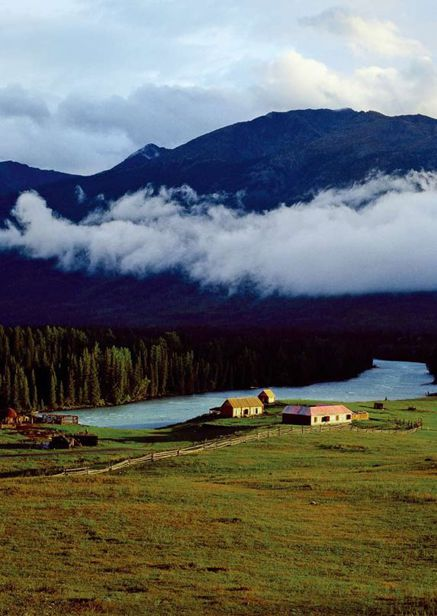
内蒙古
Neimenggu
·芳草碧连天
敖包相会。火烧的流云，接天的碧草，热恋的情人骑着温顺的马，牵手于广袤的草原，恢弘的落日给青草镀上了层层金边。草长莺飞，郁郁葱葱的草甸上，星星点点散布的羊群中，时常响起低沉的马头琴声，善良的牧民们世世代代生长在这片水草丰美的土地上。天苍苍，野茫茫，风吹草低现牛羊……
呼伦贝尔草原
Hulun Buir Plain
清 纯 的 梦 乡
梦呓一般的名字，充满了游历的美感，仿佛世间的喧嚣不过是淡淡的一笔，略过，是那么地自然而然。
呼伦贝尔，如果沉浸在这方水土，那么城市的诸多美好，都再算不上是美好。丰沃的土地，如今是一片平静与祥和。但是依稀记得，在很多年前，鲜卑、契丹、女真各个部族奋力争夺时的情形。然而，碧绿的色泽却如此包容，在一片风和日丽中，将历史安然治愈，然后，蓝天白云，就只能看到牛羊悠闲的身影，牧民快乐地放歌。长鞭策起，引吭无数，骏马奔驰，此情此景，引起自豪与喜悦之情无数。
放眼望去，那狭长的灰色公路似乎就要被广袤无垠的草海所淹没，扑鼻的花香，清脆的鸟鸣，点点白色浮出视线，公路也雀跃起来。这里，只有山水之乐，牧民之乐。茫茫的草原，厚重的森林，绚烂的民族文化，来到呼伦贝尔，便是来到又一个绮丽多姿的北国。
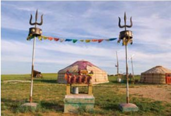
草原上的蒙古包
芳草鲜美，花朵娇艳，河流纵横，在这样的情境中，成群的牛羊似乎也变得更加快乐，奶茶的香气似乎也变得更加扑鼻，然而，就是在这样让人怦然心动的情境中，竟然还隐藏着大兴安岭的茂密林海，沃野万顷的嫩江平原。
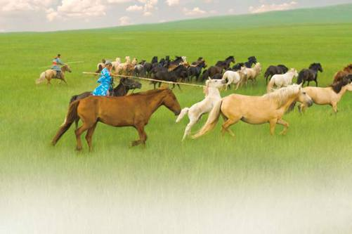
奔腾的骏马，是草原人豪情的坐骑，给嫩嫩的草原以无限风情。
穿梭于茂密的大兴安岭林海，遥望古松在风中婆娑的姿态，一片片深邃的绿，就在这样的情境中直逼灵魂，感受到的不只是震撼，更是博大和深沉的内涵。
美丽的呼伦贝尔风光中，河流与湖泊的星罗棋布是一笔夺人眼球的妖娆紫色。因为不同的地理环境，造就了这里别具特色、千姿百态的河流。
呼伦湖，八百里方圆的圆润饱满，远离尘嚣的清澈，使她成为中国第四大淡水湖。她就像一名不食人间烟火的女子，至今仍保持着古老与原始的风貌。站在湖边，感受着她的宽阔，享受着湖天一色的别致，周边尽是一望无际的碧野，每逢湖风吹过，那带着花香的气息让人心旷神怡。
满洲里，祥和之中现出勃勃生机。登上天桥俯瞰奇景，那独特的白色屋顶便是俄罗斯小镇贝加尔斯克，在绿海中恰似点点珍珠，熠熠生辉。
行走在呼伦贝尔，对于北国，又多了几分感慨，那一片古朴，那一处自然，如一缕淡淡的馨香，在脑海中，再也挥之不去。
草原风光览胜 Neimenggu
“是蓝天上一只翱翔的雄鹰，是马背上一段颠簸的传奇，是毡包里一碗醇香的烈酒，是草原上一阵飘溢的乳香，是姑娘脸上那一朵羞涩的红霞，是牧人心中那一片缠绵的回忆，是尘嚣中来自天籁、来自远古那一曲空灵的绝响。”
——大草原的空灵绝唱
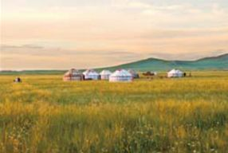
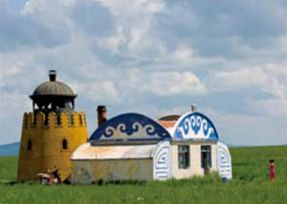
美丽草原上美丽的蒙古包
关于蒙古的一切就那样汩汩地涌出：水草肥美、丘陵起伏、金色的晚霞、棕色的驼群、白云一般的羊群，在碧绿色的海洋中尽情遨游，一幅美丽动人的天然画卷就这样凝成风景。“天苍苍，野茫茫，风吹草低见牛羊。”美丽的草原，宜人的风光，如果想忘却尘世的烦忧，这里无疑是最佳地点。
一直以来，除了呼伦贝尔大草原之外，科尔沁大草原在内蒙古草原中，扮演着不可或缺的角色。在蒙古语种，科尔沁翻译成“带弓箭的人”。当地人的始祖是成吉思汗的胞弟，于是，那里的男人像他们的始祖般能骑善射，不仅勇敢而且彪悍。史上著名的孝庄太后，便出生于此。
在通往草原的火车上，视线中涌入的，便是传说中连绵无尽头的科尔沁大草原。碧草的芬芳，清新的空气，马儿牛儿悠闲地吃草，此情此景，让一直难得平静的心，就那么自然而然地放松下来。
素有“摔跤之乡”的锡林郭勒大草原，更有着中国第一个草地自然保护区。在这里，蒙古族人最普遍的运动便是摔跤，那有着雄健体魄的蒙古族人，在一片自然的美好中充分地吸取着天地间的灵气。放眼所见之处，遍地美丽的花朵，骏马驰骋的草原中，更能看到星星点点的白色羊群，惬意地享受着上苍赋予草原的一切。座座蒙古包像珍珠般洒在碧绿的海洋中，那景色，让人不知不觉就醉了。
“平顶山”是锡林郭勒草原上一处别致的景观。登上山顶，感受大小山尖连绵依偎，“平”由此而生。在这里看落日，仿佛看到夕阳娇羞地贴吻着平直的山顶，似一曲爱情颂歌，深深地烙在人们的脑海。
都是草原，却有着各自的特点。阿拉善大草原一直有“骆驼之乡”的美誉，在这里不仅可以探访到额济纳的神秘的黑城子，美丽的胡杨林，更可以使味蕾笑逐颜开，烤驼峰、烤全羊，那独特的诱人滋味，让人垂涎欲滴。
原始的地貌，原始的植被，甚至连蒙古包都透出一股原始的纯朴味道。那样美丽的地方，天然的绿茵场，置身其中，仿佛灵魂就栖息在那片天然草毡上，仰望天空，满眼幽静的蓝色，转头凝视，葱茏就在眼前，闭眼倾听，鸟儿无限欢歌，起身行走，那步调，便在不知不觉中，写进旋律，被牧民愉快地编织成歌。
而且鄂尔多斯大草原同为内蒙古大草原之一，却属于半荒漠类草原。著名的景观有“游人滑沙”、“骑骆驼游沙漠”等等。鄂尔多斯的歌舞着衣异常华丽，若能欣赏到他们的歌舞，你定会送上无比赞叹。
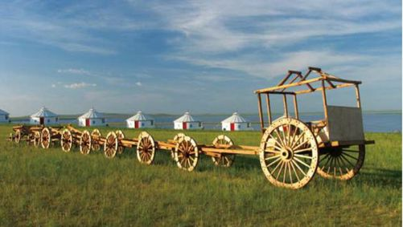
呼伦贝尔草原上的勒勒车
勒勒车是草原人传统的运输工具。这种车的车轮高度可达4米，整个车就显得车轮大、车身小。正是这样的设计，勒勒车可以在草原、湿地、沙漠中很好地行走，是牧民拉粪、拉水甚至搬家的工具。这种车可以首尾相连，一个人可以赶四五个甚至十个勒勒车，可以说是草原上的列车。
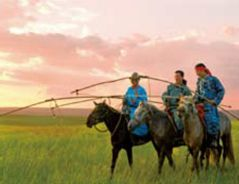
牧民在草原
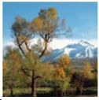
美丽的胡杨
额济纳
Ejina
天 堂 与 地 狱 间 的 最 美 风 景
大漠、古城、清空、风沙，这样的词语，总惹人思古。电影《英雄》中，总是忘不了张曼玉与章子怡曾在这样的情境中飞舞着红袖。而背景中那大片大片的绝美黄叶，时而迎风飘摇，时而随袖卷起，似乎就在那么一瞬，额济纳的胡杨林便成了在天堂和地狱之间最让人难以割舍的美丽。
额济纳旗，一直以来以悠久的文化著称，厚重的底蕴像绳子一般牵引着前来探寻的人们。
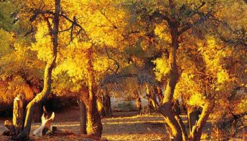
浓密的胡杨在秋日中显出灿灿的风情。如果说它们有如是的灿烂，那是因为它们的根扎得很深。
胡杨的枝丫，遒劲而充满张狂的美。
额济纳，一片苍凉中，孕育着凝起搏发的力量。那种美，摄人心魄，夹杂着荒凉与炙热，在茫茫戈壁中，绽放着永恒的色彩。
额济纳是内蒙古最大的旗，在内蒙古的最西部，与甘肃省和蒙古人民共和国相邻。在那里，不仅有让人惊叹止步的茫茫戈壁、苍凉辽阔的浩瀚沙漠，更有美得让人心醉的胡杨林，如今，这里已经是世界上仅存的三大胡杨林之一。无数旅人就为了那抹灿烂的金黄，日日夜夜细数着光阴，掐指计算着秋天来临的那一霎，欣赏这天堂与地狱之间最让人窒息的绝美，用心灵感受它的时候，仿佛沐浴着上苍最豁达的恩赐。
每年九月伊始，胡杨树的魅力开始绽放到极致。似乎一夜之间，整片的胡杨林全部被寒露染黄，就那么短短的几天，绿色全部被秋色染成金黄。金色的叶子，湛蓝的天空，荒芜的沙漠，构成一幅天然的绚烂图画，比阳光更加夺目耀眼。
观胡杨林，最佳去处在二道桥、四道桥和八道桥。额济纳河上共有八道桥，两千米一座，每道桥都被胡杨林环抱着，行人游走在其中，很容易便忘记了哪里才是人间。迷失，在金色的胡杨树林中迷失，在少了几分沧桑和厚重的金黄中迷失，在浓浓的色泽中迷失……时值初秋，站在胡杨林里，那层林尽染的色泽，和着天空的蓝，分外通透。在这样的美景面前，任何辞藻都失去了原有的力量，唯一剩下的，就只是一种感觉，迷醉的感觉。
印象中，一直以为只有夏花才有如此的绚烂，可金色的胡杨，就在飘舞着的瞬间，让人感觉到生命在即将走到尽头时的那种姿态，甚至比夏花更加绚烂夺目。只是一瞬间，心中突然涌出肃然起敬的感慨，那极具震撼力的景色，就在轻歌曼舞间，将生命绽放得淋漓尽致。
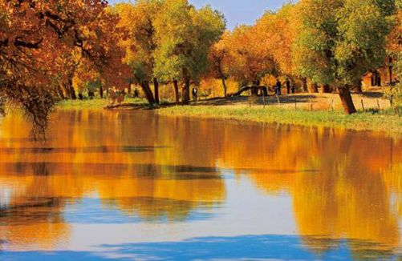
河边的胡杨林，尤其丰满绚烂。而即便是干旱时，胡杨也能经由深深的根系，汲取地下的水分慢慢维持生存。
传说，因为战争，黑河改道。一片胡杨就此枯死。又传，西夏那些战死于此的将士，便化作了苍凉的胡杨林。干枯的胡杨夹杂着历史的凝重，为枯燥的沙漠添了几笔重彩。
从怪树林走出不远，党项族建西夏国之都城遗址，从视线中跳出。远远望去，古城西北角上的白塔似乎在空灵的传说中洗去沉重，现出几分肃静和苍凉的美感。至今，蒙古人仍以“黑将军”誓死不降明军的悲壮引以为豪。
额济纳旗，至今仍以一个在灰色的沙漠烟尘中不断行走的路人姿态将自我审视。那秋风中时时舞动起的绝美风姿是它心中对于感情的全部信仰，而光怪陆离的怪树林，则是它心灵深处对于信仰的坚贞不渝。黑城子的遗址是它口袋中藏着的竹简，夜以继日的途中，独自品读，时时自省，将旅途中寂寞的精彩一一收藏。
一种永恒的色彩，在额济纳旗的日夜，被浸染得深刻而凝练。
额济纳旗的蜜瓜
因为额济纳旗地处戈壁的深处，这为蜜瓜的生长提供了有利的条件。不仅不受环境的污染，更避免了病虫的毒害，实属天然纯正的绿色食品。加上这里干旱的气候和充足的光照，使得这里的蜜瓜不但个头儿大，而且口味纯，果肉鲜香甜美，扬名海内外。
巴丹吉林沙漠
Badanjilin Desert
上 帝 画 下 的 曲 线
这里被美誉为“上帝画下的曲线”，身临其境方能感受到那旷世的奇美，而美丽的背后，却潜在性命的隐忧。又或许，这是上帝布下的困厄人们的网，不然，那孤寂的荒漠，为何终日与恶劣为伴？猜测，猜测时，走近巴丹吉林，却发现，原来，那里充斥着一股神奇的美丽，看似孤寂，其实不然……
大自然的鬼斧神工是它历经沧桑后留给后世的烙印，那一抹浓重的色彩，自由奔放在西部的沙砾之上，4.7万平方千米的辽阔，注定它成为沙漠的宠儿。这样的广袤中，其实暗藏着不为人知的秀色，游历之后，便会深深爱上这里，满心欢喜的同时，发出由衷的感叹。
在这里，人们仿佛进了异域。
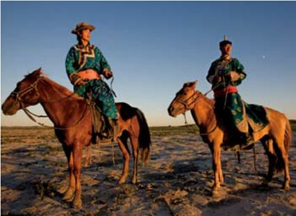
虽是沙漠，却蕴藏着丰富的水源，一探巴丹吉林的历史，却不小心听到这个古老的传说。相传，很久之前，在沙漠的边缘住着一位蒙古牧民，他的名字叫做“巴岱”。一天，他因迷路误入沙漠。一路前行中，饥渴难忍。举步维艰中，他仍坚持着前行的信念。然而，就在身体失去大脑支配的一瞬间，眼前突然一片耀眼的波光，抬起头，发现前方沙山下，正是一片碧波荡漾的湖水。“巴岱”演变成今日成今日的“巴丹”，而“吉林”，则代表着“地狱”。也许，那古老的传说是想告诉人们，巴岱在地狱的尽头遇到了沙山中的天堂吧。
走入巴丹吉林沙漠，视线中遍是高耸的沙山。还有那歌声嘹亮的鸣沙、草色如茵的湿地，望一望那泊湖水，美丽的倒影，如梦如幻。奇峰伴着鸣沙，秀湖倚着神泉，古庙中微声默念中感受无限神圣，这里便是美丽的巴丹吉林，它的沙丘，从来不是用来威慑人们，它的奇美，却是深入人们心扉。
碧水、蓝天、金沙、水草，来到这里，人们会顿时变得疑惑。这里究竟是干涸炙热的漠北，还是湿润俊秀的江南？
必鲁图沙峰堪称巴丹吉林沙漠中的“珠穆朗玛”。它海拔1609米的高度，似乎在用那强劲的伟岸来改写沙漠无高峰的事实。登上必鲁图沙峰，整个沙海尽收眼底，呼呼吹刮的风，让人顷刻感觉到心旷神怡。
除了奇峰，鸣沙一直在绵延起伏的沙丘中扮演着不可或缺的角色。每每受到风力作用，那沙丘仿佛是沧海中奔涌的巨浪。宝日陶勒盖的鸣沙山，200多米高的身形，陡峭的峰峦，错落的沙脊，在下滑的瞬间，轰鸣声声震天动地。因为如此，“世界鸣沙王国”的美誉被它骄傲地占有，那雄浑的气势，震天的声音，成为巴丹吉林沙漠中的又一奇景。
在大多数人的眼中，沙漠本该是一片土黄，寸草不生。然而，原以为是寸草不生的死亡之地，却让人惊诧地看到无限生机。这里，深秋的大漠之中，本该是宽泛的死气沉沉，却被绿色骄傲地填满。沙米，就是这样一种沙生草灌木植物，在行走的途中，几乎成为了沙漠中生长着的奇迹。
沙漠中的骆驼队，它们是大漠最值得骄傲的生灵。
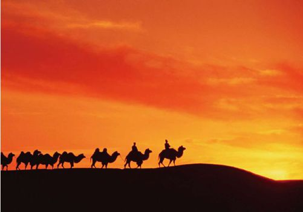
悉心观察，原来地面上黄褐色的蜥蜴一直避开人们的脚步惊慌地奔跑。看沙面上留下的频频足印，心中甚是爱怜。仰望头顶，大漠苍鹰正舞动着翅膀盘旋在天际，时不时地高低游走后，变成一个不见身形的小黑点。再向水平方向凝视，那肥壮的骆驼，与沙漠一样的色泽，与沙漠一样的步调，慢慢地游走，引起无数驼铃叮当。
水是沙漠人最宝贵的财富。
在庙海子咸水湖边，一处喷涌的淡水泉成为巴丹吉林的又一个奇观。那如碗口般粗细的泉眼，竟能使小虾在其中肆无忌惮地潜水，那些随着喷泉一通翻涌的沙粒，在涤荡的过程中，也变得晶莹剔透。久而久之，地上形成了一条喜人的沟渠，小小地，自然而然地生长着，同时更滋润了充满生命欲望的杂草。
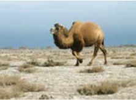
沙漠中的骆驼，在走着它们的应有的道路。
长途跋涉后，沙漠绿洲终于呈现在视角中央。它有着动听的名字——苏敏吉林。一片浑天的黄色中，你是否能想象得到，沙山环抱着一座寺庙，就那么孤零零地，孤零零地保持着同一种姿态，日复一日，年复一年。
那庙叫做巴丹吉林庙，也是整个沙漠中唯一的寺庙。因为地处沙漠深处，竟一直完好地保存了原有的面貌，从来不曾被改造修葺。
也许就是因为这庙，才生成这处沙漠绿洲。而这里，却在日月的交替中，成为巴丹吉林沙漠的牧民活动的天堂。
这究竟是一处怎样的地域？恍如江南水乡，那娟秀之气，那神奇景观，让旅者的脚步不断放慢，充满无限的喜悦之情。
甘肃
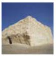
Gansu·静水幽城
大漠孤烟直，长河落日圆，似乎只有这样的情景之中，才能与传说中的仙女不期而遇。古老的敦煌，在反弹着琵琶的美丽背后，一曲高歌，从此凝成摄人心魄的美丽，百转飞天……甘肃，别样的景致，别样的情怀，记忆中，不只是萧瑟的客栈，恩怨的江湖，还有那幽深的眼神，在某个月白如练的夜晚，独自落寞。
敦煌莫高窟
Dunhuang Caves
尘 世 飞 天
“蓦然回首中斩不断的牵牵绊绊/你所有的骄傲只能在画里飞
大漠的落日下那吹箫的人是谁/任岁月剥去红装无奈伤痕累累”
——《飞天》
大漠中满是荒凉，但其中也有无尽的宝藏。
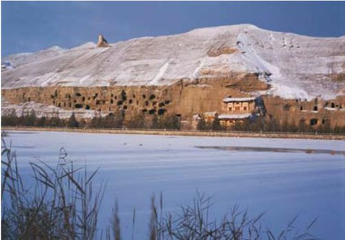
传说中，飞天是侍奉佛陀和帝释天的神。她们美丽妖娆，能歌善舞，那反弹着琵琶、手捧着莲蕾的仙人们，便是在茫茫苍穹中游走，或是直上云霄，或是俯首人间，势若流行中，将美丽尽情挥洒，将舒展尽情绽放。或许，那只是优美的传说，而敦煌莫高窟壁画上的飞天，却在每个不为人知的瞬间，轻歌曼舞于那个空灵世界的尽头。敦煌，两个坚实有力的字体，承载了多少汉唐风雨。敦煌，大而昌盛的城，莫高窟便存在于这片遥远的西北。茫茫的沙砾中，无数智慧在闪烁；悠远的驼铃声，摇醒无数后世的探寻者。
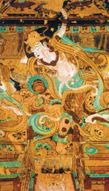
莫高窟精美的绘画，让前来观瞻的人赞叹不止。尤其是其中的飞天形象。
很少人知道，这里曾是一条大河，在日夜的奔流中，遂堆积了沙石。也许是河流改了河道，也许是地壳发生变化，河水干涸后，这里成为一座光秃的山。公元366年，乐樽和尚云游至此，就是在那样一个下午，没有任何征兆地，山顶突然现出千佛影像。万丈佛光中，乐樽虔诚地跪拜，从此他皈依此地，广结善缘，广宣佛法。在山上，他亲自凿出第一个洞窟，洞窟内，雕刻着一尊弥勒佛。从此，他日夜顶礼膜拜，敬香添烛。为了使洞窟更加声情并茂，他分别在洞窟的四壁及天花板绘制出各个与佛相关的故事。之后，无数信佛之人来到这里，大家纷纷效仿乐樽在山上雕凿佛像，钱多些，规模便略加宏大，钱少些，洞窟便小些。无论怎样，大家都心怀虔诚在这里膜拜、祈福、保佑安康。那凝聚了顶级雕刻技艺和绘画技巧的莫高窟，就这样在后世的喟叹声中，成为一笔最为宝贵的财富。从帝王将相到市井黎民，洞窟的出资者无论身份、无论背景、无论种族、无论性别。在这里，只是因为信仰，那祈祷声声，满怀虔诚。自豪，看到莫高窟的那一刻，仿佛看到千年的岁月更替，跪拜的那一刻，轻轻的诵经声如轻烟般时时萦绕在耳边。那声音意味着超凡脱俗，那声音，穿越时光直达千年之后的今天。
世间人生几多空茫，仓皇北顾，不如活在当下。
苍莽的沙漠中，也有文明的种种印记。
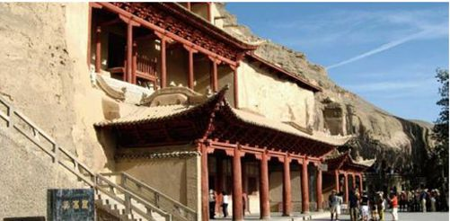
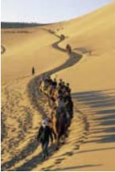
沙中之路，那些本地人与外来人，共同慢慢前行。
鸣沙山与月牙泉
Mingsha Mountain & Yueya Lake
佳 偶 天 成
“它是天的镜子，沙漠的眼，星星沐浴的乐园。每当太阳落向，西边的山，天边映出月牙泉。每当驼铃声声，掠过耳边，仿佛又回月牙泉……”
人们经常把月牙泉和鸣沙山比喻成为孪生姐妹，而我却更觉得它们之间的关系犹如一对佳偶天成的爱人，在每个日月，哼唱着缠绵悱恻的情歌。
沙漠中的绿洲，人们梦想的境地。
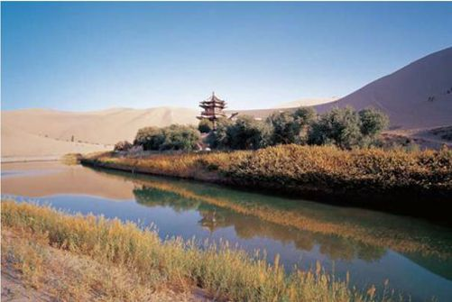
敦煌的八景中，月牙泉是其中之一，她是眷侣中的“妻”。这里古时候被称为“沙井”，也叫“药泉”。南北100米，东西25的大小，让整个泉水形如弯月，于是，这“沙漠第一泉”的芳名便由此得来。鸣沙山东起莫高窟崖顶，西接党河水库，虽名称为山，却是黄沙堆积成的丘。每当狂风肆虐，巨大声响从沙山中传出，如遇微风，那声音好似丝竹般悦耳动听。它是眷侣中的“夫”。鸣沙山群峰环绕着怀中那娇艳欲滴的月牙泉，它们就这样持续着恩爱缠绵，将“水火不容”的论调推翻。而月牙泉，就这样如一弯新月，温柔地躺在黄沙的怀抱，那甘甜的滋味，澄明的泉水，一躺，便是千年。鸣沙山滑沙，在敦煌的众多景观中，这个切实的体验更显得弥足珍贵。坐在沙山上，从高处向低处滑落，沙子发出的嗡嗡隆隆声，似微弱的雷鸣，颇为神奇。
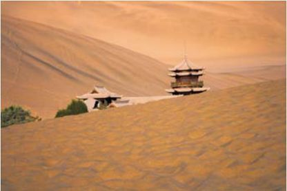
月牙泉隐藏在炎炎黄沙中，是一个奇迹的存在。
从山顶俯视，那道道沙峰，犹如海中涌动着的波涛，而山坡上涌起的沙浪，则好似水面上荡漾开来的涟漪。自然的美，就这样隽永，人与自然的和谐，就这样被刻画得淋漓。那登山的艰难恰似一种考验，对于沙粒，或是人生。用心灵去感受，方才醒悟，自然给予人类的，绝不仅仅是表面看来的那样简单。
似乎就在一瞬间，清澈的泉水跳入视线。泉水之奇，在于那弯月的形状，在于沙山的包裹。原来造物主也是性情中人，不然，那清澈的新月与高耸的沙山何以相依相偎得如此浪漫？那神秘中的妩媚多姿何以引人千里来此只为一阅芳颜？
“鸣沙山的眼睛、敦煌的命脉”，后人在形容月牙泉的时候如是说。每当旭日东升时，那月牙泉在晨妆中焕发出最为美丽的色彩，月水一色，宛若新月挂在群峰间。于是，人们将好听的名字赋予这迷人的景致——月泉晓澈。
鸣沙山与月牙泉的故事，就这样朝朝暮暮地重复着，任时光更迭交替，永远显出那深入骨髓的爱。让人羡慕，惹人流连忘返。
沙坡头旅游区
沙坡头旅游区位于腾格里沙漠东南边，在这里，大漠、绿洲、高山、黄河融为一体，既能看到西北的雄奇景观，又能看到江南的秀美景色，独特的自然景观中，它被游人尤其看中。
玉门关
Yumen Pass
望 穿 秋 水
瞥一眼塞外草原，那看似壮烈的情绪中，其实是望穿秋水的渴盼。那年那月，是否有如练的月光？那时那刻，是否有春风曾经眷顾捎来花香？拱手作揖，烈酒可曾与坚韧一并化作无限豪情？低吟仰望，玉门关的寂寞掩住文人无限感怀的诗笺。
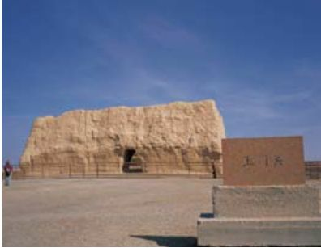
敦煌郊外玉门关旧址，玉门关三个字赫然醒目。
黄沙漫天中，初使西域的大队人马还在浩浩荡荡中前行，千里关卡万里行程，化作一纸涂鸦：风萧萧兮，易水寒，壮士一去兮，不复还……敦煌境内的玉门关，在百转千回之后，成为旅人睹物思史的别致景观，每每经过，都是轻轻喟叹。
古时候，它不过是个关隘。西汉时西域的和田美玉，从这里进入中原，于是“玉门关”便有了美丽的名字。如今，只剩下被无限风蚀的遗址，在敦煌西北小方盘城内，供后人瞻仰。一望无际的戈壁风沙，虚无缥缈的海市蜃楼，充满生机的沙生植物，形态逼真的天然睡佛……蓝天、大漠、植被，混淆的辽阔演绎着摄人心魄的壮美，隐隐中，似乎还能听到丝绸之路上那如梦似幻的驼铃叮当。
一座四方形的小城堡，耸立在戈壁砂石岗。南临咸碱沼泽，北毗哈拉湖水，北方的北方，长城在那里挥手召唤。
“黄河远上白云间，一片孤城万仞山。羌笛何须怨杨柳，春风不度玉门关。”王之涣曾百般留恋这里，这首《凉州词》，更是诉出无限衷肠。兵荒马乱的年代，车水马龙的繁华，在塞北，独一无二的玉门关带给人们依靠和安全，虽然春风不度，可那伟岸与挺拔的姿态，依然让人心生敬畏。
阳关
“阳关”与“玉门关”同为汉武帝时建造的、为确保丝绸之路畅通无阻所修筑的关卡。它位于敦煌市西南。宋代以后，因陆路交通的发达，这里逐渐衰落，成为废圮。这里曾因暴露大量的古文物而扬名四方。
在这个早已荒废的关隘中，时光恍然倒退，刺眼的阳光在夯土的墙池中游历，空间变得异常空。除了淡淡的悲壮，还能感觉到的，便是它镇压四方的气势。遥想玉门关，那厚重的关楼里，是否沉睡着将军征战的铁蹄之梦？那冰凉的夜色中，是否还有一丝细嫩的折柳为谁献上？
伸手触摸关上的尘土，仿佛一下便触动了历史的乐章。羌笛、驼铃，无数声音杂糅在一起，像是欢乐，又像是悲歌。
猛然记起的画面，在浓重的黄沙中，扮演着无穷无尽的壮美。即使离开，仍然能在某个触景伤情的夜晚，与古人对饮。听着踢踏踢踏的马蹄声，沐着白帝城的月光，那一片孤帆远影，在某个不为人知的瞬间，便跋山涉水来到面前。
古道，西风，曾经想过，在那样的情境中，可曾有伊人的影子相伴随行。那样萧瑟的江湖中，可曾有醉人飘香的秋色。谁的歌，唱响枕边三千行热泪，谁的相思，流过千年玉门关般的寂寞。
如今的黄沙贫瘠，当年，却可能是水汽氤氲。历史变化，今人只能凭吊古人。
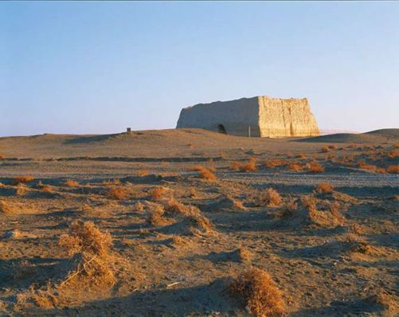
宁夏
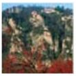
Ningxia
·登高凭栏望
古老的西夏王朝，在历史的回眸处，与萧瑟的背影不期而遇。无尽的忧国忧民，无尽的千回百转，在贺兰山下止步，成为《满江红》中低沉却雄壮的爱国箴言。宁夏，以川动人，以川励人。你知，我知，那一日，待重收旧山河，你我必然再次登高凭栏，把酒畅欢……
贺兰山
Mount Helan
西 夏 放 歌
一步步地靠近，强忍着内心的澎湃，在飞沙扑面的时候昂然抬望，在水木清华中咀嚼那气贯长虹。
在蒙语中，“贺兰”意为“奔腾的骏马”，而那延绵着的二百多千米的山脉，似乎注定以守护者的姿态出现。若不是它的阻隔，北方的腾格里沙漠便会肆意侵袭宁夏。于是，人们经常说，黄河养育了这一方平原，然而若是没有贺兰山，这里便失去了广袤富饶的全部色彩。
贺兰山，从西夏王陵一路游走到这里，那种怀古的幽情自然而然地让人想到岳飞，想到他的《满江红》。贺兰山地势独特，腾格里、乌兰布与毛乌素三大沙漠的分界线上，它巍然而立。这里是“朔方之保障，沙漠之咽喉”，若想通往中原，游牧民族定要从此经过。如此一来，这里便是理所当然的兵家必争之地，是铁骑翻腾、瑟瑟嘶鸣、皓月高悬中的仰天长叹。那样的情景，穿越脑海，浮出想象。
星海湖与贺兰山
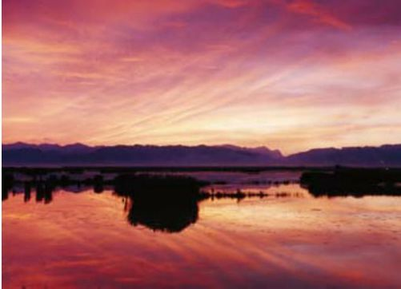
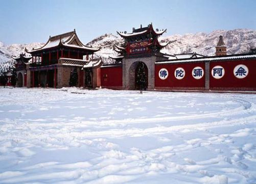
贺兰山北武当庙在积雪的覆盖之下，显得古韵十足。
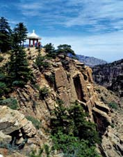
贺兰山苏峪口风景
远远便能看到那一片青色的巍峨。在高耸入云的挺拔中，群山傲然挺立。夕阳之下，远处隐隐狼烟，仿佛千军万马的奔腾。若用“美”来形容这山，势必美得让人心颤。那深暗的轮廓，连绵起伏的影影绰绰，在地平线的左右舒展开来，呼吸瞬间变得局促，那是一种让呼吸都变得窘迫的美感，超脱感性的所有辞藻。
大漠孤烟直，长河落日圆。无边的戈壁荒漠，映着凄凉而生，映着凄凉而亡，但眼前西夏的贺兰山中，那山依然是翠绿盎然，那水依然是细流涓涓。这独特的一支，恰似万朵红尘中夹杂的一支蓝色，让人充满无限遐思。
“贺兰山下阵如云，羽檄交驰日夕闻。节使三河募年少，诏书五道出将军。”遥望历史中那一篇篇鲜活的诗句，山，也便跟着这些诗句，一同融入了历史。
贺兰山岩画在贺兰山上，分布着12个岩画点。岩画多集中在距离沟谷较近的地方。岩画的分布，明显遵从地貌的特征。在苏峪口到大西峰沟，岩画多分布在山体。苏峪口以南至柳渠口，山体岩画数量稀少。而荒漠草原上，基本没有岩画分布。
六盘山
Mount Liupan
低 调 的 内 涵
天高云淡，望断南飞雁。不到长城非好汉，屈指行程二万。
六盘山上高峰，红旗漫卷西风。今日长缨在手，何时缚住苍龙？
——毛泽东《清平乐·六盘山》
六盘山的屹立突显出某种义无反顾的姿态。它有些执拗，为了神圣的使命，甘愿放弃与泾水缠绵；它有些木讷，虽是一方山水却总是忘记梳洗打扮。然而，若不执拗，怎能奠定起坚韧？若不是木讷，那番朴实无华，如何叫人心生感念？
六盘山，作为中国最为年轻的山脉之一，那三千米的海拔，两百千米的逶迤，显出的，是铮铮铁骨。六盘山山路曲折险狭，经历六重盘道才能到达峰顶，而它的名字，也由此而来。它本有磅礴的气势，却从不炫耀。作为关中平原的天然屏障，北方重要的分水岭，它从不张扬。“春去秋来无盛夏”是人们对于它的褒奖，“云海迷漫，日出云开”的美景，惹得人们前去观望。
六盘山俯瞰
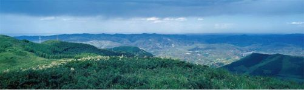
虽是铮铮硬汉，却有着旖旎的风光。一代天骄成吉思汗在征服西夏时，曾在这里避暑，休养生息，虽病逝于此，六盘山却得了避暑胜地的美名。凉殿峡的惬意，荷花沟的舒爽，秋千架的传奇，游历之时，总有意外的收获。
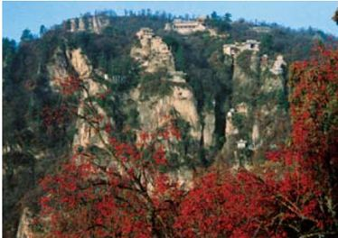
六盘山支脉崆峒山
凉殿峡又被称为凉天峡，顾名思义，是因为清凉。位于六盘山腹地大峡谷深处的凉殿峡，全长超过20千米。在这里，不仅有成吉思汗的避暑行宫遗址，更有生态植物园等景观。植物园中，珍稀物种在其中婆娑起舞，从树木到花草，从花草到动物，从动物到家禽，物种繁杂，多不胜数。
似乎只有这样的名字，才有资格生长在这样的山峦。二龙河，光是读名，便能感受到其中定有不凡的传说。相传，泾河龙王的大儿子虐待洞庭湖龙女，被钱塘龙王暴打，因为愧对众人，于是跑到二龙河深处的鬼门关修身养性。他的弟弟继承了王位，而且经常到鬼门关探望哥哥，劝他及时反思自己的言行。于是，二龙河的名字应运而生。与此同时，因为这里是两水汇合的地方，所以茂林修竹的自然景观，更是美不胜收。
在美丽的荷花苑，时时能领略蝴蝶飞舞、万木葱绿的天然景观，每年的5月到8月，那满眼的荷花碧绿的荷叶，泛起无数花香，惹人欣喜。
一座看似低调的山峦，却隐藏着诸多美景。也许，这便是六盘山固有的姿态。
新疆
Xinjiang
·浩瀚漫无边
有一种浩瀚，比大海还要壮观。广袤无垠的沙漠，金黄的沙砾，起起伏伏的沙丘，一轮落日染红天际，仿佛是大气的神来之笔。长风长驱直入，呼啸而过，将沙堡雕琢成惟妙惟肖的模样。绿洲是沙漠的眼睛，映出蔚蓝的天空，映出浩渺的沙海，映出葡萄架下的冬不拉。
塔克拉玛干大沙漠
Taklimakan Desert
西 夏 放 歌
夕阳西下/楼兰空自繁华/我的爱人孤独地离去/遗我以亘古的黑暗/和/亘古的甜蜜与悲凄
——席慕蓉《楼兰新娘》
当新娘的容颜已作土灰，鸟羽证明她曾经华美一世。——每次读到席慕蓉的《楼兰新娘》，心中总是翻涌起无数感怀。也许，在历史的尘埃中，楼兰是塔克拉玛干灵魂上的一滴泪，在辉煌了千年之后，那再次迷离的失踪，其实是化做了一缕青烟，在茫茫戈壁滩上，将灵魂永久地封存。你听，古老西域途中，驼铃的声音还在叮叮当当，那片盐泽和荒原，至今还有无数后人前来瞻仰。
塔克拉玛干，囊括了生与死的全部定义，囊括了神秘与诱惑的全部离奇。这里是生命禁区。
从敦煌伊始，走出玉门关，沿着古代丝绸之路不停向西行走，那一路渐行渐远中，尘世的浮华逐渐退去，内心中虔诚之心怦怦跳动。千年之后的今天，那一方神奇，终于得以真切地遇见。那一方繁荣，终于得以真切地触摸。那茫茫的戈壁、无垠的荒漠，仿佛是一处灵魂的安息之所，无论是古村还是废墟，都是一座不朽的精神家园。
沙漠中的古戍堡
在塔克拉玛干大沙漠中，蕴藏着很多鲜为人知的建筑与历史。其中，古戍堡便是一个。在和田河畔的红白山上，由唐朝修建的古戍堡至今还伫立在那里。但凡对文人内涵关切的旅者，都会在此停留，游历其中。
终于与塔克拉玛干正面相逢。
传说，很久以前，人们热切地渴盼着，如果能引来天山和昆仑山的雪水，那干涸的塔里木盆地定会充满盎然生机。一位仁慈的神仙被百姓的真诚深深打动，他有两件非凡的宝物，一件是把金斧，另一件是把金钥匙。他将金斧子交到哈萨克族人的手中，用以劈开阿尔泰山，如此一来，清凉凉的雪水便能灌溉到这方盆地。他还想把金钥匙交给维吾尔人，让他们用它来打开塔里木盆地中的宝藏。谁知神仙的小女儿玛格撒弄丢了钥匙，从此，盆地中央便成为今日的塔克拉玛干大沙漠……
一路中，走过的是丝绸之路的旧址。曾几何时，这里遍是汉武帝下令修筑的驿道，所经之处，烽燧不绝如缕。如今，那烽燧早已被风蚀，成为面目全非下的雅丹。
沙漠中楼兰佛塔遗址，今天已然残破不堪。
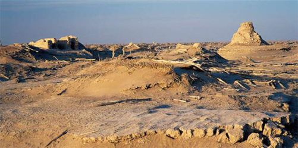
终于到了罗布泊，眼前，便是在情愫中隐隐作痛的古楼兰王国的故地。面前的罗布泊，俨然变成一个干涸的湖盆，而昔日的美丽，在想象中径自溢出，依稀可见。
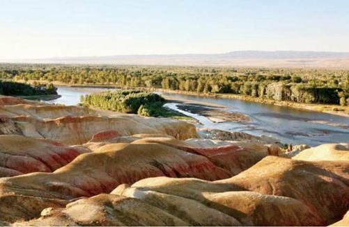
这是沙漠中的奇迹：树木葱翠、河流默流，还有美丽的风化腐蚀岩风光。
如今的罗布泊，形孤影单中，凄凉不再，在的，只有安详的姿态，在苍穹间，化作沙漠中最为坦荡的一种色泽，将思想凝结成晶。
绕过罗布泊，顺着干涸的孔雀河一路朝上追溯，在沙漠的东沿，那些散落着的如荒冢一般的废墟便是楼兰古城。
终于，终于在这样的时刻，与历史交汇于一处。于时光而言，不过是不经意的一瞥，于我们，却是千年的守望与渴盼。古老的楼兰，像一阵风，吹起，散去，风过时交织的悲喜，扑朔而迷离。人们曾在丝绸之路上，停歇于此，然后各分南北。这里曾有过的繁华，一如阳光洒下的金光。遥想楼兰盛世，遥想当年……
如今，那几经修复的城池仍然显出巍然壮观的姿态。房舍、大殿、街衢、庭院……如蜂巢般整齐地排列，时至今日，仍让人感慨万千。恍惚中，楼兰人、安息人、中原人，交谈的声音，往来行走的声音，揉成一团。
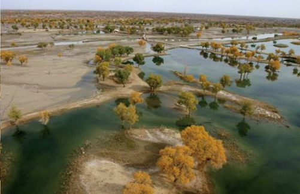
塔克拉玛干中的胡杨，是这片土地的不二风光。
最终，那一片繁荣，还是选择了无声地沉寂。汉军攻入，楼兰王被俘，一个古国，遂隐匿起踪影。
一片荒凉的戈壁滩，一片炙热无垠的沙漠，几多历史的残肢，在几经落寞后，绽放出文明的笑容。那茫茫的色泽，仿佛天的尽头，无数史学家们流连其间，仿佛时刻探寻着诸多民族古老的伤口。有的依旧充满血色，有的，已经恢复完全。
天地之间，时间与空间不停地交错开来。感受大漠氤氲的炙热之气，淡淡的悲恸中，虔诚逐渐散播开来。行走的途中，穿越的途中，仿佛自己便是一个苦行僧，期待着一种无声的蜕变，让冥冥中的灵魂找到至诚的皈依之地。
一条路，挑起中原和西域。塔克拉玛干大沙漠，在中国的历史上，无疑是一方厚重的领土，却时刻显出寂寞的姿态。
谁的诗卷卷起无数盛唐的风沙，是谁的羌笛吹出两汉的史帙？一切皆是虚空，无论是风沙还是荒漠，皆是虚空。唯有精神永恒，唯有命运的蕴韵永恒。
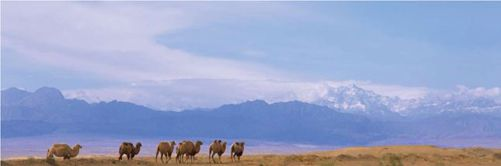
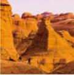
置身魔鬼城，仿佛身在迷宫，人显得渺小，而自然显得无比强大。
雅丹魔鬼城
Devil’s City
恶 灵 传 说
恰似大自然制造的迷宫，狰狞的面孔，渗出几丝深入骨髓的恐惧。迷宫中，或是端庄凝重，或是龙盘虎踞，或是深邃幽静……游走过后，殊不知，那鬼斧神工的造诣早已深深侵入脑海，成为挥之不去的梦魇。
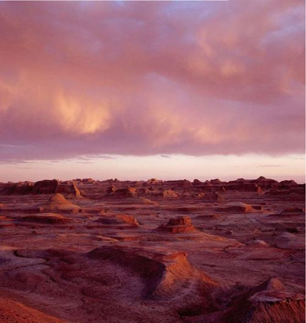
这样独特的风蚀地貌，却还有古城堡遗址，甚至是普通民房遗址。可见曾经的不远，这里也并非这样荒凉、恐怖如“魔鬼城”。
在新疆，这样的地貌随处可见。维吾尔语中，人们称它做“陡峭的土丘”，译成汉语，便有了好听的名字——雅丹。在神话传说中，恶魔通常有着动听的名字。而雅丹，正应了这样的传说。它的雄浑，不是身临其境的感受，便无法描述得深刻。克拉玛依魔鬼城、克孜尔魔鬼城、乌尔禾魔鬼城……只是听名字，已是入木三分。
相传，在20世纪80年代前后，人们传说在魔鬼城有人挖到了金块。于是，每当农闲的秋冬季节，便有大量三五成群的人来到魔鬼城，那一铲一铲的挖掘，对于雅丹的破坏可想而知。寻宝热持续了几年的光景，之后渐渐失去了色彩，不再被人们相信。
新疆人经常用壮丽来形容视线中触及到的魔鬼城，在天地之间，魔鬼城内一片片红褐色的雅丹，仿佛荒原上突兀的雕塑，带着几丝幻灭的浓重色彩。这里便是乌尔禾魔鬼城。因为长时间受到风蚀，那本身便是软软的土质，在风沙中不断变幻着身形。光与影的交错间，大自然的神奇魔力尽情展现，土丘不再是土丘，视线所及之处，是地壳垂直运动后留下的褶皱，它的神秘犹如神来之笔，在人们的不断想象中变成面目可憎的魔鬼城。魔鬼城通常地处风口，每当遭遇大风天气，那团团厚重的黄沙几乎包裹住太阳，狂风肆虐地盘旋在天际，怪诞之声从魔鬼城中频频传出，那如恶灵哭泣般的声音，让听到的人们瞬间如雨电击，毛骨悚然。
即便是在这样的地方，仍然有着人群。克孜尔乡铁提尔村便是距离魔鬼城最近的居民区。若要走出这里，魔鬼城是必经之处，于是，诸多魔鬼城的古老故事便从这里开始，逐渐流向外界。相传，几十年前，铁提尔村的村民每次前往异地，都要经过这里，人们怕忘记来时的路，便在路旁土堆上留下石头，引以为记。时间久了，本是荒凉的魔鬼城竟然显现出一道别致的风景：每隔一段路程，便会看到大大小小堆起的石堆。虽然有石堆之路，旅人还是不敢在夜晚独自穿行魔鬼城。久而久之，一个驿站便生成了。
雅丹的魔鬼城，似乎终年与恐怖相随。然而，切身地体验后，却感受到一丝与表面看来的不同。人们在面对苍茫的戈壁滩时，还是不自觉地前往探寻，那似乎是因为，那种新奇和刺激，无论怎样地恐怖之极，都是大自然幻化出的造诣，体验之时，倍觉奇迹之壮美。
白哈巴
Baihaba Village
享 受 生 命 的 暖 意
一个幽静而美丽的小山村，远离凡尘的喧嚣，一直以来，古朴醇厚的民风滋润着这里的一切。当原始的生态与古老的文化传统相互交融，那恪守了几百年的风貌，便会在今日的凝练中开出最为耀眼的花朵。自然与人的和谐共生，在这里被演绎到纯粹。
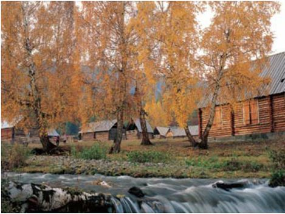
潺潺的流水，秋日的树木，朴质却独特的民居，白哈巴到处展现着自己的细腻优美。
白哈巴位于新疆的阿尔泰山南脉，海拔在1200～2600米之间。东边，喀纳斯保护区就紧挨着这里，西边，哈萨克斯坦与它一水相隔。它是一个村落，这里的居民信奉喇嘛教，他们皆是蒙古族的居民，他们的名字叫做——图瓦人。据说，图瓦人的祖先原是成吉思汗西征时路过喀纳斯而留下的一支队伍，他们原本驻留在这里提供军需，可是日渐久远之后，竟然形成部落。他们依靠放牧狩猎为生，从此过着与世隔绝的日子。在这里，哈萨克族与蒙古族共同生活，在两条小溪之间狭长的台地上，他们的居所依山傍水而立。由原木筑成的居所，看似古朴的小小木楞屋，颇有几分欧式村寨的风格，而房屋侧面看去形成“人”字的设计，是为了预防雨雪的侵袭。人们把食物储存在顶棚与屋顶之间通风的阁楼，像小松鼠准备过冬一样，保持着原始而美好的生活乐趣。
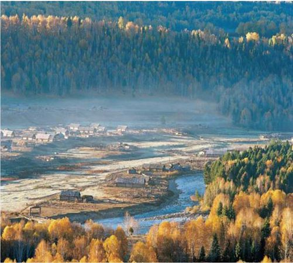
林木包抄中的白哈巴，更像是自然的无比宠儿，而不是所有人能享有的美丽。
这里的村民都是艺术家，家家都像一个工艺品陈列馆。看那炕上的花毡，墙上的帐幔，就连地中央的火炉也是技艺精湛，美丽异常。
整个夏季，他们全家都在牧场操劳。空下的房子，便租给外来的经营者，或是开个小旅馆，或是经营个小商店，待到旅游旺季结束，他们再重新回到自己的家里过冬。在新疆的最北端，这样的小日子，他们过得不亦乐乎。
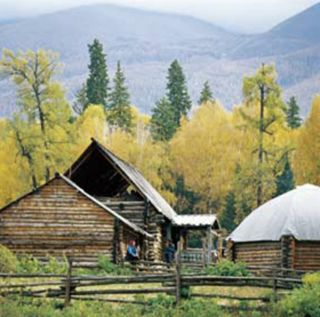
木质屋舍俨然，使人无法把它与简陋联系起来，而想到的只能是风景如画。
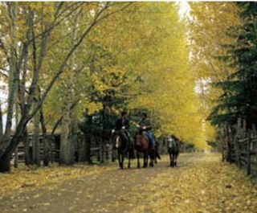
落叶纷飞，游人来这里，也最好是在这个时候。
每个日落和黄昏，伴着袅袅的轻烟，牛羊闲散地行走，整幅画面，充满了大自然的美感。有人说，如果把喀纳斯湖比喻成为美丽的世外桃源，那么白哈巴则是偌大原始环境中最难能可贵的童话世界。
秋天的白哈巴，随处可见火红的桦树叶，金黄的杨树叶，在山冈上向下俯视，那草甸的褐红惹人爱怜，那落叶松的淡黄让人倍觉舒心。远远望去，高山被皑皑白雪覆盖，向上看，湛蓝的天空广阔无边。这里没有古色古香的中国建筑，这里没有圆柱红墙的气势恢弘，可是，在面对它的时候，人们的视线中犹如跃进一幅精美绝伦的油画，一片田园山色中，淡雅而舒爽的美丽应运而生，像极了童话世界，却比童话世界更为真实可信。
美丽的阿尔泰山，一直以来被人们誉为“金山”，或许是因为它身处内陆腹地，或许是因为它的神秘离奇，来过这里的人称赞它“无处不入画”，行走在其间，那份美丽和宁静就在不知不觉中沁入心脾。
有人说，只有和谐与宁静才能为居住提供最佳的地点，只有这样的情境中，栖息地才能称之为栖息地，生命，才能从一种状态真正进入到从容恬淡。
的确，白哈巴村虽然小，却尤其细腻；虽然小，却尤为精致。漫步在其中，无论是随意点缀在门口的木栅栏，还是房子旁边那棵白桦树，都显得那么温馨。
在晨光中睁开双眼，沐浴着阳光，看着小房子里袅袅升起的轻烟，与挑水的村民愉快地打着招呼。此情此景，一种生命独有的暖意就这样释放开来，融入整个白哈巴的美丽时光中。
喀纳斯湖
Kanas Lake
纯 净 如 童 年
那湖面里的倒影，不只有皑皑的白雪、层峦叠嶂的山峦，更有童年时光中那抹纯真，在久违的笑容中，浮出水面……
美丽的新疆，美丽的喀纳斯湖。云雾缭绕中，花草若隐若现，无限生趣盎然中，将喀纳斯的美丽风光尽显。
喀纳斯湖北段的入湖口处，那条长逾千米的枯木长堤成为喀纳斯湖独一无二的奇观。每当泛洪时节，那长堤都会飘起，依据常理，那枯木也许不过向下漂游，却也不至于逆向行驶，然而，就是这样一条大长堤，多少年来，无论人们将它扔到哪里，它都会执着地漂回原处。像是一个只认自己窝窝的小狗，无论主人将它赶得多远，都会重新爬回它的小窝窝。
淼淼的水汽中，喀纳斯如披着青衣的仙女。

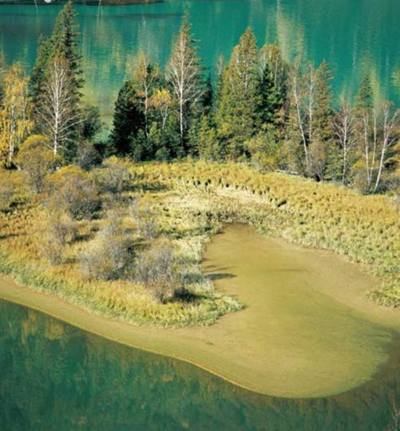
喀纳斯是彩色的，仿佛带着灿灿的厚重韵味。
传说，“湖怪”一直在喀纳斯湖中潜藏。因为那喷雾行云的法力，无数牛羊马匹来到岸边饮水时都被它卷走，而这样的传说，更是变换着版本一直延续到今日。就连科考队的队员也宣称湖中有巨型“湖怪”，长时间兴风作浪。
原来，那大鱼本是一种叫做“大红鱼”的长寿鱼，据悉，这种大鱼，最长能活到200岁以上，同时，因为诡异的行踪，让人无法确切了解它的生活习性，打捞它也就甚是艰难。于是，每次“捉湖怪”的尝试都以失败告终。
“云海佛光”是喀纳斯湖众多景观中的又一神奇。八月份，太阳会像一个巨大的彩色光环喷薄而出，那光环，凝结了赤橙黄绿青蓝紫七色，鲜艳且炫目。在众多景观的映衬中，仿佛神佛临世，于是人们美其名曰“云海佛光”。
喀纳斯又是“变色湖”。每逢春夏，湖水都会变换成不同的颜色，从每年的四五月份开始到十月份，湖水的颜色就像变色龙一般，让人喜出望外。五月，青灰；六月，碧蓝；七月，乳白；八月，墨绿；九十月份，湖水也变得绚烂；冰封的十二月，湖水又变回白色的镜面……
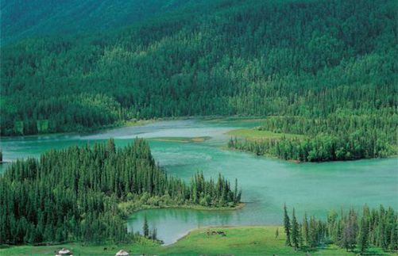
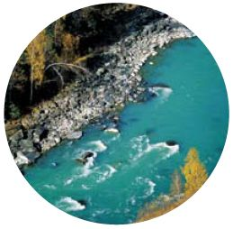
20万年前，喀纳斯湖作为古冰川创蚀、冰渍物阻塞山谷而形成。
卧龙湾如名字一般，潜藏在距离喀纳斯10千米的地方。在这里，一座木桥横架东西。站在桥上，北边便是平静如镜面的卧龙湾，而南边便是咆哮中的喀纳斯河。
峡谷中，那一出蓝色月牙形的湖湾尤为引人注目，人们亲切地称呼它为“月亮湾”。月亮湾中的水时刻随着喀纳斯湖水的颜色变化而变化。据说，在湖里，有嫦娥奔月时留下的一对脚印，也有人说，那脚印是当年成吉思汗在追击敌人时踩下的，无论这脚印来自何处，它都成为了月亮湾中颇为著名的标志性景点，供后人前来参观。
伊犁草原
Yili Plain
复 杂 的 美 感
伊犁谷地向来卓尔不群，在那片地域上的草原，必然也继承了这样优秀的品质，逶迤千里，让人慨叹。
不仅与雪山对视，更与沙漠对峙，这便是新疆的草原。传说当年成吉思汗西征，其中一支蒙古军队正由天山深处向伊犁进发。虽是春季，山中却满是叫嚣着的风雪，在寒冷和饥饿的双重折磨下，军队早已疲惫不堪。然而，就在即将心灰意冷的刹那，眼前一片跳跃的绿色映入眼帘。那是怎样的草原啊，纵横交错的流水，清澈潺潺的溪流，繁花似锦的美，犹如世外桃源般顿时给予军队无穷无尽的力量。恰在这时，云开雾散，一轮火红的朝阳悬挂在天边，光芒万丈的时刻，人们不由得大叫“那拉提”，从此，这里便有了这样的名字，含义为“最先见到太阳的地方”。
那拉提草原是伊犁草原中最优秀的一片，草高花繁，每逢仲春，更是美丽动人。在这里，野花遍野，开满山冈，红橙黄绿，成为草原景色中一抹浓重的绚烂色泽。
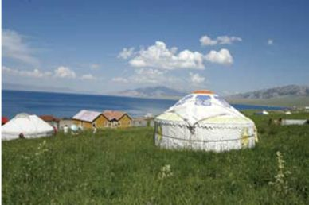
草原美丽的蒙古包
伊犁是那样一个地方，在茫茫戈壁之边，它独特的森林成为北疆最为奇异的风景。一种空旷无比的姿态，将人们的内心禁锢，快乐地驰骋在草原之上。
有人说，巴音布鲁克草原是蒙古人的天堂，那么，巩乃斯草原便是理所当然的哈萨克人领土。
古老的哈萨克民族，这个传说中骑在马背上的种族，在追求自由的道路上，喝着奶茶、骑着骏马，那样的生活，似乎囊括了全部游牧民族的崇高理想。
火红的茉莉、火红的哈萨克花在每个六月竞相绽放，似一团团喷薄的火焰，在维吾尔与哈萨克民族的眼神中，化作不朽的色泽。
昭苏草原同为高山草原，除此之外，它更是草原石人的故乡。这里有奔腾的骏马，巍峨的高山，海拔两三千米之上，仍见片片绚烂多彩的白花，仍见片片使人动容的云杉。昭苏草原依山而卧的姿态，在雍容典雅中，更显出几分高贵与妩媚。
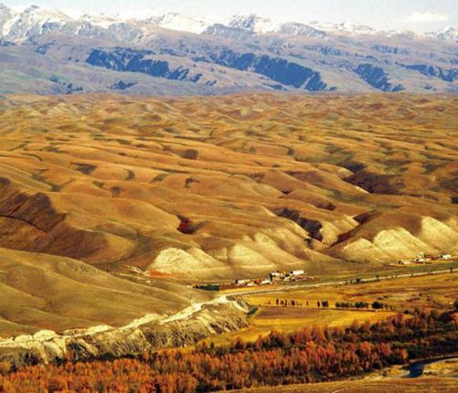
远眺伊犁，这里是塞北的江南，这里如许的秋色令人目眩神迷。
赛里木湖
赛里木湖位于新疆西部的伊宁市西面，紧挨丝绸之路的北道，博乐市的西南面。在90千米天山西段的高山盆地中，伊犁草原沿湖岸穿过。秀美的天然风光，享誉中外。
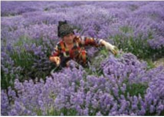
熏衣草装扮美丽草原。
一块完整的石头，雕刻成男人、女人的身形，不知从何时起，昭苏草原立起一尊尊雕像，那一米或是两米的雕像，就那样伫立在草丛中，花丛中，表情略显凝重、若有所思地望向远方。
没人知道那些石人缘何而来，在几番探寻后，根据考证，得到这样的结果：原来，那是古代突厥人留下的遗物，他们的存在，似是“守墓人”，又或者是古代的“疑兵”。确切的说法，无从定论。
几千年的时光一去不返，如今，草原石人的数量已经在人们的敲击下变得屈指可数，昭苏县将八尊石人像散落在各片草原，为的是让他们览尽美好的草原风光，在这样美丽的地方，重新享受天伦之乐。
这便是伊犁的草原，无垠的美丽，五彩缤纷的景致。草原中透出一种温馨，那温馨在繁杂的历史中显出别致的内涵，似一种历经沧桑后的美，深邃、动人。
水声潺潺，那清脆鲜活的声音，犹如哈萨克姑娘清脆的笑声，在天真烂漫之中，在暴风骤雨之中，在阴冷清幽之中，感动无数连绵起伏的山峦。一曲《草原之夜》，在广袤的天幕下快乐地响起，那歌声，仿佛穿越时间与空间，细细密密地织出幸福的网，恪守整个草场家园。
绿草满坡的草原风光。
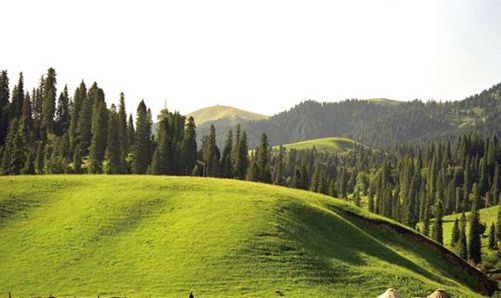